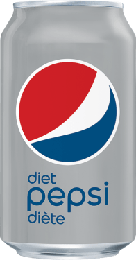
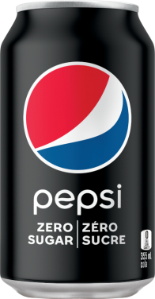
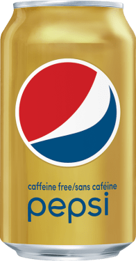
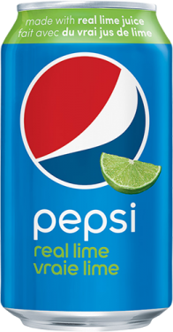

Pepsi
PRODUCTS INFORMATION
PepsiCo, Inc., American food and beverage company that is one of the largest in the world, with products available in more than 200 countries. It took its name in 1965 when the Pepsi-Cola Company merged with Frito-Lay, Inc. The company’s headquarters are in Purchase, New York.
The first Pepsi-Cola was created by Caleb D. Bradham (1866–1934), a pharmacist in New Bern, North Carolina. Hoping to duplicate the recent success of Coca-Cola, Bradham named his sweet cola-flavoured carbonated beverage Pepsi-Cola in 1898. The drink proved so popular that in 1902 Bradham incorporated the Pepsi-Cola Company. After many years of moderate prosperity, the company fell on hard times after World War I and was reorganized and reincorporated on several occasions in the 1920s.
In 1931 the company’s trademark and assets were picked up by Charles G. Guth (1876–1948), founder of the modern Pepsi-Cola. He established a new Pepsi-Cola Company, had a chemist formulate a better drink, set up new bottling operations, and began merchandising a hugely successful 12-ounce bottle for five cents. Guth was also president of Loft, Incorporated, a candy manufacturer and soda-fountain chain (founded 1919), and in legal battles in 1936–39 he lost a controlling interest in the Pepsi-Cola Company to the new management of Loft. When in 1941 the Pepsi-Cola Company was merged into Loft, the name Loft, Inc., was changed to Pepsi-Cola Company.
In 1950 Alfred N. Steele (1901–59), a former vice president of Coca-Cola Company, became chief executive officer. His emphasis on giant advertising campaigns and sales promotions increased Pepsi-Cola’s net earnings 11-fold during the 1950s and made it the chief competitor of Coca-Cola. (After Steele’s death, his wife, actress Joan Crawford, became an active director of the company.) In 1965 Pepsi-Cola merged with Frito-Lay, Inc., the maker of snack foods such as Fritos, Doritos, Lay’s potato chips, and Rold Gold pretzels. The newly enlarged company diversified further with the purchase of three restaurant chains—Pizza Hut, Inc. (1977), Taco Bell Inc. (1978), and Kentucky Fried Chicken Corp. (1986; now called KFC)—and Seven-Up International (1986), but in 1997 the restaurant chains were spun off into a new, separate company called Tricon Global Restaurants, Inc. Looking to add more products that were considered healthier, PepsiCo acquired the Tropicana and Dole juice brands from the Seagram Company in 1998, and in 2001 it merged with the Quaker Oats company to form a new division, Quaker Foods and Beverages. With the merger, PepsiCo’s popular brands included Pepsi cola, Frito-Lay snack products, Lipton Tea, Tropicana juices, Gatorade sports drinks, Quaker Oats cereals, and Rold Gold pretzels.
In the early 21st century, PepsiCo focused on expanding its operations in other countries, notably Russia, which was its second largest market. In 2008 it bought a controlling interest in JSC Lebedyansky, Russia’s largest juice manufacturer, and three years later it completed its acquisition of Wimm-Bill-Dann Foods. Those investments helped make PepsiCo the largest food and beverage company in Russia.

Pepsi is a carbonated soft drink manufactured by PepsiCo. Originally created and developed in 1893 by Caleb Bradham and introduced as Brad's Drink, it was renamed as Pepsi-Cola in 1898, and then shortened to Pepsi in 1961.

Diet Pepsi is a diet carbonated cola soft drink produced by PepsiCo, introduced in 1964 as a variant of Pepsi with no sugar. First test marketed in 1963 under the name Patio Diet Cola, it was re-branded as Diet Pepsi the following year, becoming the first diet cola to be distributed on a national scale in the United States

Pepsi Zero Sugar (sold under the names Diet Pepsi Max until early 2009 and then Pepsi Max until August 2016), is a zero-calorie, sugar-free, ginseng-infused cola sweetened with aspartame and acesulfame K, marketed by PepsiCo. It has nearly twice the caffeine of Pepsi's other cola beverages.[1] Pepsi Zero Sugar contains 69 milligrams of caffeine per 355 ml (12 fl oz), versus 36 milligrams in Diet Pepsi

Caffeine-Free Pepsi is a version of the cola Pepsi that omits the caffeine that is customarily part of a cola. It was introduced, under the brand name "Pepsi Free", in 1982 by PepsiCo as the first major-brand caffeine-free cola sold in years.[1] A sugar-free variant, originally known as "Diet Pepsi Free", was also introduced. The "Pepsi Free" name itself was phased out in 1987, and today these colas are known simply as "Caffeine-Free Pepsi" and "Caffeine-Free Diet Pepsi".

Pepsi Wild Cherry is a cherry-flavored cola first introduced in 1988 by PepsiCo as a replacement for Cherry Cola Slice, introduced as part of the line in 1986. Two sugar-free versions are also available, with zero calories, named Diet Pepsi Wild Cherry and Pepsi Zero Sugar Wild Cherry, and a vanilla-flavored version Pepsi Cherry Vanilla is also available. Alongside the beverages, a lip balm version is also available. Pepsi Wild Cherry is currently sold in the United States and Canada as a regular, permanent product.

Pepsi with Lime flavoring. It was introduced in 2004 and was discontinued by 2006. It was later re-released as a standard Limited Edition variety for the Spring of 2019, but was later re-released permanently. It was also available in the Philippines.

A version of Pepsi-Cola that is sweetened with sugar instead of high-fructose corn syrup and lacking citric acid. It was first introduced as Pepsi Throwback in May 2009 as a limited edition and was sold again throughout 2010–2011, until becoming permanent. It was rebranded to its current name in June 2014.

Pepsi with mango flavoring. It was first sold as a standard limited edition variety in spring 2019 and later released permanently.

Pepsi with Black Cherry flavoring. It was released as part of the Pepsi Soda Shop series of Sugar-sweetened colas as a limited edition from September 2021.

With its light, crisp taste, Diet Pepsi gives you all the refreshment you need - with zero sugar, zero calories and zero carbs. Light. Crisp. Refreshing. Diet Pepsi. Nothing refreshes like a Diet Pepsi.

Nitro Pepsi is a cola soft drink produced by PepsiCo. It is a nitrogen-infused version of Pepsi. The addition of nitrogen gas, instead of the usual carbon dioxide, creates a smooth texture. It was developed around 2019,[1] and has been marketed since March 2022. The drink comes in an aluminum can containing a widget that infuses the drink with nitrogen when the can is opened, similar to some nitrogen canned draft beers like Guinness. The beverage is also available in a vanilla flavor

Nitro Pepsi is the first-ever nitrogen-infused cola that is smooth, creamy, and easy-to-drink. To best enjoy the delicious taste of Nitro Pepsi Vanilla Draft Cola, chill the can, pour hard, and enjoy.